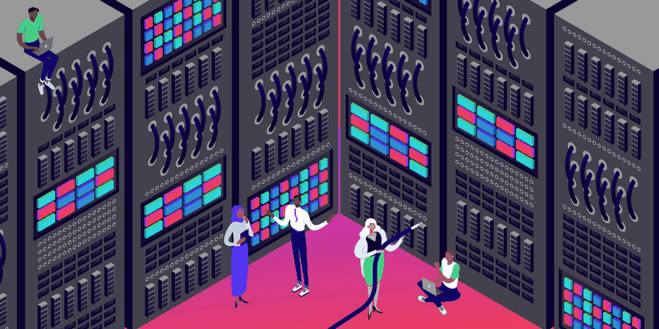

Что такое домен
Домен (доменное имя) – это символьный код, хорошо читаемый и понятный для восприятия человеком, который позволяет находить отдельные интернет-узлы, например, web-сайты. Доменные имена при этом имеют строгую иерархию (уровни), корневым уровнем является доменная зона, например, .ru или .com. Тогда домен второго уровня будет выглядеть как moysait.ru, третьего уровня poddomen.moysait.ru и так далее. Разделителем выступает только точка.
Для чего нужны домены
Чтобы погрузиться в тему глубже, важно понять принцип их работы.
- Пользователь вводит понятный ему адрес в строке браузера (он может ввести его самостоятельно, а может воспользоваться поисковой системой).
- Браузер обращается с этими данными к системе DNS («система доменных имён» от англ. Domain Name System).
- Распределённая система DNS-серверов ищет соответствие символьного имени и фактического IP-адреса.
- Результат возвращается браузеру и происходит соединение, если соответствие найдено.
То есть, пользователь может попасть на ваш сайт и без знания доменного имени, но для этого ему нужно знать IP-адрес. Но, согласитесь, запись вида 192.168.72.106 – сложно запоминающаяся и малопонятная для человека. Наверное, поэтому система доменных имён стала так популярна. Ведь проще и быстрее набрать в строке адреса site.com, чем альтернативу вида 174.96.125.84. Кроме того, есть другие нюансы и сложности.
Недостатки IP-адресов
- За одним реальным IP-адресом сервера может скрываться сразу несколько десятков или даже тысяч сайтов. Как тогда найти нужный? В случае с запросами, пришедшими на сервер с указанием нужного доменного имени, сложностей не возникает – специальный модуль web-сервера анализирует входящие запросы и перенаправляет их в нужную директорию/нужному процессу.
- О сложности запоминания и чтения мы уже упоминали. И если адреса интернет-протокола 4-й версии (выглядят так 174.96.125.84) ещё можно как-то прочитать, то с современной 6-й версией это просто нереально (IPv6 выглядят так FF80:0000:0000:0000:0123:1234:ABCD:EF12, что в 4 раза длиннее адресов IPv4).
- IPv4-адреса выдаются только операторам связи (они получают свой пул адресов) в соответствии с принципами, разработанными регламентирующими организациями. Операторы, в свою очередь, распределяют эти адреса среди своих клиентов. Из-за ограничений в длине адреса возникают проблемы – адресов на всех не хватает (это, собственно, и послужило причиной возникновения нового стандарта IPv6), но не об этом речь. Чтобы максимально сэкономить имеющиеся в обиходе адреса, провайдеры применяют так называемые схемы с динамическим распределением IP (адреса выдаются тем клиентам, которые сейчас активны, после переподключения можно получить уже другой адрес).
Недостатки доменных имён
- Так как доменная система работает поверх интернет-протокола, получается некая двойственность – нужно сначала обратиться к DNS-серверам, а затем уже подключиться к реальному IP-адресу. А это увеличение маршрута соединения и, соответственно времени.
- Старые домены, сведения о размещении которых уже есть в системе DNS, открываются быстро благодаря прямым запросам. Но стоит получить новый домен или перенести сайт на другой сервер (IP будет отличаться), и DNS вас уже найти не сможет. Из-за иерархической структуры и сложности кэширования данных при таких объёмах запросов на актуализацию сведений может уйти до 3 суток. Это значит, что для пользователей перенесённый сайт будет недоступен в течение всего этого времени. И повлиять на этот процесс никак не получится.
- Получить домен первого уровня нельзя. Например, .ru или .com. Доменными зонами могут владеть только крупные организации или даже целые государства. Например, национальная зона .ru контролируется АНО «Координационный центр доменов .RU/.РФ», который, в свою очередь, привлекает к продаже доменных имён второго уровня партнёров – регистраторов, а те могут привлечь еще подрядчиков и т.д.
Какие домены бывают
Общие (gTLD) – регистрируются на базе доменных зон .org, .com, .net.biz, .info и .name. Такие домены не привязываются к какому-либо региону и могут использоваться в любой стране.
Национальные (ccTLD) – регистрируются на базе доменных зон, выделенных для определённых стран, чаще всего такие доменные зоны контролируются государством.
Зарезервированные – фактически, это имена, недоступные для регистрации. Они могут быть в различных доменных зонах. К таким доменам, например, относятся: example.com или test.ru.
Что делать после покупки
Сам по себе домен – это всего лишь аналог ссылки на ваш сайт/интернет-сервис. Чтобы он заработал, необходимо перенаправить его на сервер, где лежат файлы сайта.
Это делается или через делегирование DNS-серверов (минимум основной и резервный, но возможно указание и использование большего числа серверов), или через изменение DNS-записей. Записи ссылок на DNS-сервера выглядят следующим образом:
- Ns1.имя.зона (основной)
- Ns2.имя.зона (резервный)
А при изменении ресурсных записей потребуется:
- Как минимум, настроить A-запись (именно она позволяет понять системе DNS на какой IP-адрес перенаправлять запросы). АААА-запись используется для указания на IPv6-адрес.
- Настроить MX-запись - при необходимости (она отвечает за перенаправление почтовых сообщений). Если вы хотите, чтобы ваши письма не попадали в спам, то нужно будет сгенерировать DKIM-подпись (указывается в поле TXT) и правильно оформить SPF-запись.
- Если у вас будут работать другие сервисы, нужно будет оформить SRV-записи.
- Существует большое количество других видов ресурсных записей. Ими следует пользоваться по необходимости.
Некоторые регистраторы предлагают дополнительные услуги, такие как хостинг, сервис почты, сертификаты безопасности, мониторинг доступности и т.д. Поэтому менять что-то вручную или настраивать не понадобится. Всё будет работать и так.
Ещё один важный элемент, о котором следует задуматься после покупки доменного имени – SSL-сертификат (протокол HTTPS). Он отвечает за шифрование данных между браузером и сервером (чтобы они не передавались в открытом виде).
Что такое хостинг
Хостинг – это услуга, которая подразумевает предоставление в аренду вычислительных мощностей с обеспечением их постоянной доступности. В качестве размещаемых ресурсов могут выступать: файлы (изображения, видео, документы и т.п.) или исполняемые скрипты (отдельные программы или специальные программные комплексы, отвечающее за решение сложных задач).
Для чего нужен хостинг
Хостинг неразрывно связан с доменными именами. Если домен отвечает за «красивый адрес» сайта, то весь контент, который получает браузер, хранится и обрабатывается на серверах хостера (по крайней мере, большая его часть, если не учитывать ряд специфических решений, таких как CDN).
Вообще, никто не запрещает размещать сайт на любом компьютере, подключённому к Интернету. А хостинг не всегда работает только с сайтами, это могут быть разного рода сервисы и приложения, в том числе электронная почта, бэкапы, базы данных и т.д.
Почему размещение сервера у себя дома, например, на балконе или под столом – это плохая идея? Потому что не каждому под силу организовать отказоустойчивую работу оборудования, на это уйдёт слишком много сил и денег.
Преимущества хостинга как услуги
- Мощные/производительные сервера. Конечно, есть риск нарваться
на хостера, который по факту работает на обычных конфигурациях ПК. Но он мизерный. 99,99% хостингов
используют для размещения специальные конфигурации. Почему?
- Удобно – благодаря продуманному форм-фактору, позволяющему заполнять серверами целые шкафы/стойки.
- Надёжно – благодаря специальным техническим решениям, таким, как RAID-массивы, жёсткие диски с большой наработкой на отказ, максимально быстрая оперативная память с защитой от потерь и т.д.
- Просто в обслуживании. Производители серверных решений часто поставляют специальные утилиты для мониторинга технического состояния. Некоторые неисправные элементы можно заменить «на ходу» без остановки оборудования и т.д.
- У клиента ничего не тормозит и не «глючит». Можно сосредоточится на работе, а не на постоянной работе с устранением проблемам.
- Постоянная доступность. Она достигается за счёт резервирования всего, что только можно: источников питания, каналов доступа и т.д. А клиент получает сайт, который работает круглосуточно 24 часа в сутки 7 дней в неделю, без выходных и праздников. Чем качественней хостинг, тем уверенней он в своих силах. Многие даже оговаривают SLA и свою материальную ответственность в случае простоя или сбоя. Для дата-центров (ЦОДов) даже существует система сертификации – Tier (от 1 до 4 уровня).
- Профессиональная техподдержка. Эта услуга особо актуальна для новичков и всех тех, кто не хочет погружаться в технические нюансы.
- Дополнительные услуги и сервисы на все случаи жизни. Например, защита от вирусов, спама или от DDoS-атак, SSL-сертификаты, покупка доменов, автоматическое создание резервных копий, системы мониторинга и т.д. Всё из одних рук и в одном месте.
В общем, всё сводится к принципу «заплатил и забыл».
А дома все технические вопросы придётся решать самостоятельно: источники бесперебойного питания, охлаждение, канал доступа, техническое обслуживание, настройка, мониторинг…
В случае с хостером все проблемы решает доверенное лицо в соответствии с договором услуг. Причём, в договоре может быть определена ответственность сторон и другие нюансы сотрудничества. Это один из вариантов подстраховки.
Недостатки хостинга
- Хостер работает с вашими данными. А значит, имеет к ним полный доступ. Это всегда определенный риск и нарушение конфиденциальности.
- В любой момент может произойти форс-мажор. Произойдёт технический сбой, поменяются собственники, компания обанкротится, кто-то перебьёт сетевой кабель при строительных работах неподалёку и т.д. При определённом стечении обстоятельств данные могут потеряться безвозвратно. Обязательно делайте резервные копии, храните их в разных местах и всегда убеждайтесь, что бэкапы можно восстановить.
- Вы всегда переплачиваете за что-то. Иначе работа хостера была бы экономически невыгодной. Но такова цена комфорта.
- Хостер часто фокусируется на определённых видах услуг и конфигурации оборудования. Поэтому для специфических видов услуг придётся искать другого подрядчика.
- Если вы перестанете платить, услуга будет приостановлена. Хотя существуют варианты с life-time серверами (покупаются один раз и работают до тех пор, пока вы от них не откажетесь), но это скорее исключение из правил, да и провайдеры таких услуг часто оставляют в договоре лазейку для расторжения договора, если ваше оборудование становится им невыгодно.
- Компания – это всегда люди, которые в ней работают. Поэтому отдельные услуги могут оказываться не так, как это было заявлено. Например, техподдержка не реагирует на запросы или реагирует медленно, что недопустимо для коммерческих сайтов, мониторинг оборудования не осуществляется, что приводит к поломке, и т.д.
Какие виды хостингов бывают
Классификацию провайдеров услуги можно проводить по огромному числу параметров: по целям, задачам, техническим реализациям, возможностям настройки и т.д. Например, по назначению можно выделить хостинги для:
- баз данных;
- файлов (например, для хранения резервных копий, но это могут быть и специфические решения, для работы только с изображениями и видео);
- электронной почты;
- DNS;
- игровых серверов;
- SaaS-решений;
- веб-сайтов.
Соответственно, в каждой категории будут свои технические нюансы и требования к вычислительной мощности/пропускной способности.
Наиболее востребованным для розничных клиентов можно назвать хостинг для веб-сайтов. Но и здесь из-за обилия различных технологий и подходов к оценке ресурсов происходит сильное дробление.
Традиционно выделяют следующие типы хостингов для сайтов:
- Shared (общий или виртуальный) – подразумевает максимальное удобство для клиентов, так как все основные настройки оборудования и программного обеспечения уже выполнены «под ключ». Но фактически все сайты работают на одном физическом сервере и делят его ресурсы между собой (поэтому он «общий»).
- VPS – клиенту выделяются все необходимые ресурсы, которыми он может распоряжаться как ему угодно (ставить выбранную операционную систему, настраивать нужные сервисы, хранить данные и т.д.), но фактически эти ресурсы виртуальные. Благодаря технологии виртуализации провайдер может гибко распределять ресурсы своего физического оборудования между виртуальными серверами, что позволяет ощутимо экономить.
- Выделенный сервер (VDS). Настоящий физический сервер полностью в вашем распоряжении без каких-либо оговорок и нюансов. При этом не нужно его приобретать в собственность, достаточно оплачивать его использование.
- Colocation – это когда физический сервер приобретается в собственность клиента. Хостер может «приютить» оборудование в своей стойке и подключить к своей инфраструктуре. Клиент обязуется оплачивать эти блага: канал доступа, питание, техобслуживание, апгрейд, мониторинг и т.д.
- Облачный хостинг. Это улучшенная версия VPS. Если в случае с VPS хостер оптимизирует работу своего «железа» для минимизации затрат (чтобы не собирать выделенный сервер), то в случае с облачным хостингом строится высокопроизводительная распределённая структура, которая позволяет «на лету» менять конфигурацию и производить балансировку. При этом высоконагруженные проекты могут динамически привлекать необходимую вычислительную мощность без переплаты за физическую составляющую. Это выгодно и просто для крупных веб-проектов.
Следует понимать, что виртуальные и физические сервера не обязательно можно использовать только для работы с сайтами. Они могут применяться для любых других задач, например, для организации VPN, личного облачного хранилища, для игр и т.д. Нет никаких ограничений, кроме выделяемых ресурсов.
Какой хостинг выбрать
Каждый проект уникален. Даже если у вас новый сайт, но он работает со специфичным стеком технологий, например, написан на Ruby on Rails, то большинство shared-хостингов уже не подойдёт. Нужны специфические площадки или сервер, который придётся настроить под себя.
Самая распространённая связка - PHP и MySQL. Но это не значит, что на всех сайтах может или должна использоваться только она. Программных решений существует огромное множество.
Подбирать хостинг следует из технических характеристик и возможностей, лучше всего перед оплатой воспользоваться тестовым периодом и заранее оценить, подходит вам хостинг или нет.
На что ещё обратить внимание
Даже если хостинг устраивает вас по цене и техническим параметрам, обязательно следует учесть и другие моменты.
- Заявленные характеристики ≠ реальные. Хостер может экономить на оборудовании или умалчивать о пропускной способности канала данных. И это только то, что можно измерить. Обязательно протестируйте услугу, которую хотите приобрести.
- Компания может разориться в крайне неподходящий момент, как это произошло с нашумевшими ihor или Мастерхост. Проверьте экономические показатели, изучите расположение дата-центров, узнайте, в чьей собственности оборудование, помещение. Может быть, компания в минусе по прибыли уже несколько лет подряд и находится на грани банкротства.
- Изучите отзывы реальных клиентов. В первую очередь, обратите внимание на негативные. К положительным нужно относиться скептически.
- Проверьте историю деятельности (как часто отключаются сервера, какой uptime и т.д.).
- Какие варианты оплаты доступны, есть ли среди них те, что предпочтительны вам.
- Прописана ли в договоре ответственность хостинга в случае недоступности или других проблем.
- Проверьте то, как отвечает и реагирует служба поддержки, если вам нужна эта услуга.